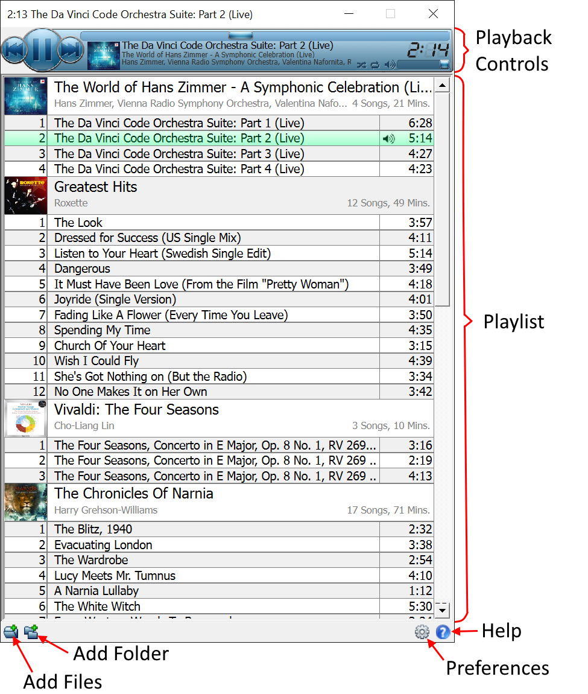

In the beginning before the Big Bang Kilonova Hypothesis there was Black Omega. Perfected over 25 years, Black Omega is an open-source music player designed for audiophile renderings of your audio files with bit perfect accuracy. Employing low level audio APIs (ASIO and WasAPI) and custom codecs Black Omega utilises the capabilities of your premium high-end DAC delivering pure seamless playback of your music collection.
The main user interface consists off

Firstly you'll need to add music files to create your playlist. This can be done via
Then you control playback via the Playback Controls.
Open the Preferences dialog to setup Audio, Controls and File Association.
Black Omega provides codec support for the following audio file formats.
| Format | File Extension(s) | Codec |
| Waveform Audio Format | .wav, .wave | Blue Omega |
| MPEG-1/2 Audio Layer III | .mp3 | Black Omega |
| Vorbis Ogg | .ogg | Silver Omega |
| MPEG-4 AAC | .mp4 | White Omega |
| Apple Lossless | .mp4, .caf | Red Omega |
| Musepack | .mpc, .mp+, .mpp | Cyan Omega |
| FLAC, Free Lossless Audio Codec | .flac | Green Omega |
| AIFF, Audio Interchange File Format | .aiff, .aif, aifc | Violet Omega |
| Wavpack | .wv | Wavpack Omega |
Playlists can be loaded and saved using the m3u, pls and xspf playlist file formats.